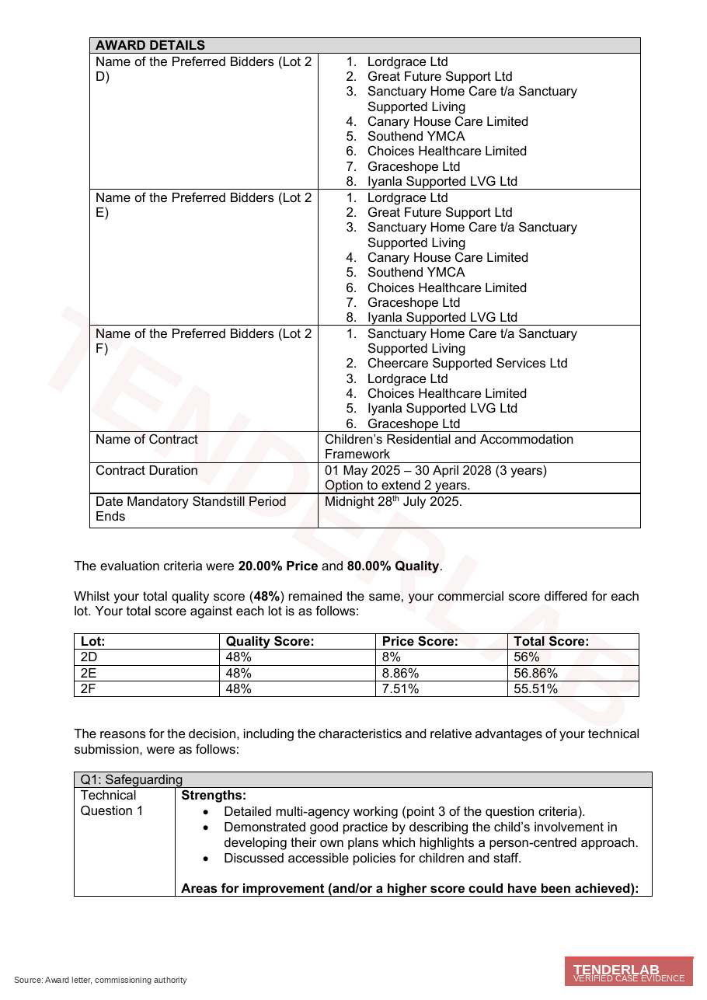
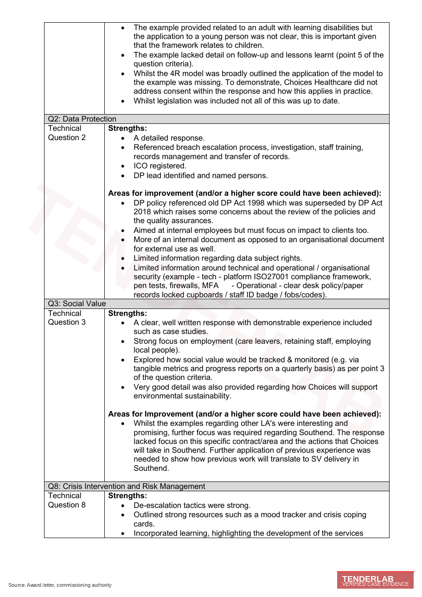
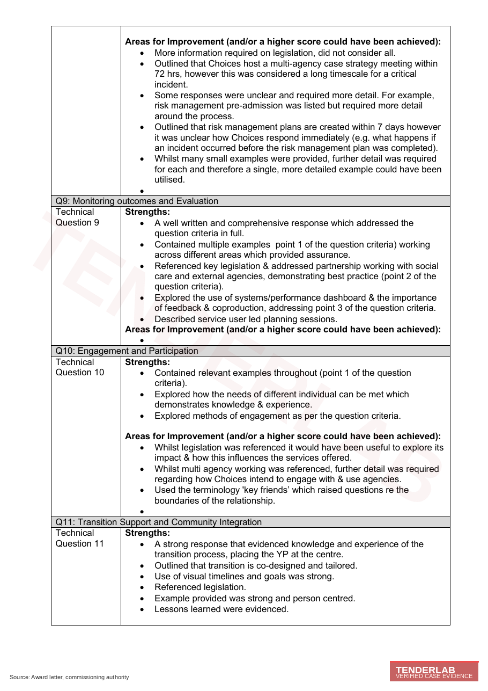
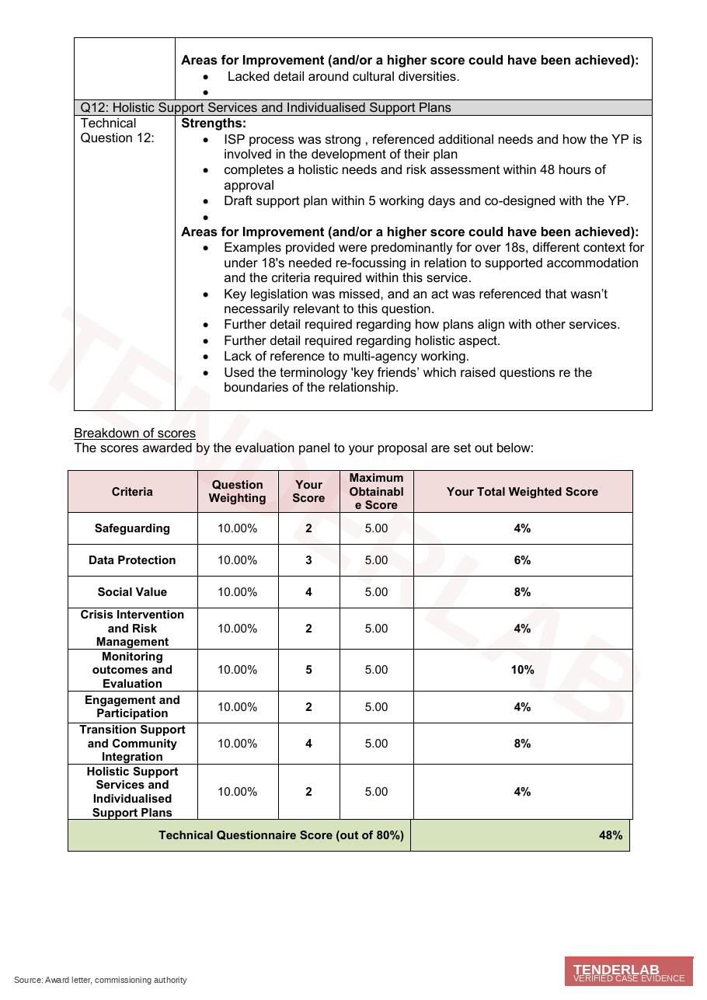
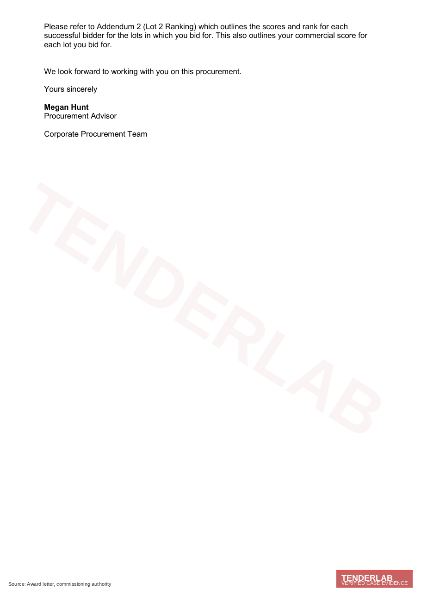

Southend-on-Sea Children's Residential and Accommodation Framework 2025 to 2028: Provider Qualification Analysis
Click to view award letter
The Award Letter
Verified Source




Section 01Case title
This case study examines the route Choices Healthcare Limited took onto Southend-on-Sea City Council's Children's Residential and Accommodation Framework, where the provider secured a place on Lot 2 D, E and F for those aged 18 and over. The procurement carried reference DN762527 and was run by the Council's Corporate Procurement Team under the Public Contract Regulations 2015 with an evaluation split of 80 percent quality and 20 percent price. The award letter reached the provider on 16 July 2025, and the mandatory standstill closed at midnight on 28 July 2025.
Section 02Organisation type and service setting
The Contracting Authority is Southend-on-Sea City Council, a unitary authority in Essex commissioning regulated and unregulated children's residential and supported accommodation. The framework was procured under the Children Act 1989, the Care Standards Act 2000 and the Supported Accommodation (England) Regulations 2023, with corresponding Ofsted registration expectations where applicable.
Lot 2 covers semi-independent and independent supported accommodation across three sub-lots, namely 2D, 2E and 2F. The 18+ subset of the lot, which is where this submission landed, captures care-experienced young people transitioning out of looked-after status, stepping down from secure or higher-acuity provision, or moving from family or alternative care arrangements into structured supported accommodation. The cohort scope covered by the lot is correspondingly broad, including care leavers transitioning to independent living, young people with mental health needs (including emerging or established personality disorders and self-harm risk), care-experienced young people with substance misuse, offending or exploitation backgrounds, unaccompanied asylum-seeking young people, and care-experienced young people with learning disability, autism or co-occurring needs.
Section 03Client profile at entry
Choices Healthcare Limited arrived at engagement start as an adult social care provider with strong operational instincts and a practised supported living offer, in the process of stretching its model into 18+ supported accommodation for care-experienced young people. The internal experience base sat predominantly in the over-18 adult social care world, the bid practice had matured around adult content, and the team had grown confident in writing for adult commissioning panels rather than for children's services panels.
Children's services evaluation panels read every paragraph for cohort-specific signalling, and adult-derived language, however operationally accurate, reads as registration risk on a children's services panel rather than as transferable experience. The provider therefore arrived with operational maturity, working safeguarding and quality systems, and a fluent supported living narrative that needed re-anchoring against the regulatory perimeter of supported accommodation rather than registered care, and against the cohort the panel was actually evaluating.
Section 04Starting gaps and limitations
Three structural gaps showed up in the first read of the draft narrative, and each pointed to a deduction the bid would have absorbed if it had been uploaded unchanged. The case examples kept defaulting to over-18 adult learning disability casework, even though the framework was asking for evidence of practice with 18+ care-experienced young people, and that drift in default register would have weakened evaluator confidence across multiple questions. The 4R safeguarding model, covering Recognise, Respond, Report and Refer, was referenced in summary form in the safeguarding response rather than applied to a worked, dated example with an evidenced lessons-learned cycle, which is the form the panel needed in order to award full marks.
The Data Protection narrative referenced the Data Protection Act 1998 in supporting policy text, even though that legislation had been superseded by the Data Protection Act 2018, and an evaluator panel reading a current submission with an outdated citation reads that as a quality assurance maintenance risk rather than as a typographical slip. The technical content was strong on monitoring and outcomes, but it was thinner on transition support and on holistic individualised support planning for the specific cohort, and the social value content carried examples from other local authority footprints rather than focusing on Southend specifically. The crisis intervention narrative described risk management plans completed within seven days of admission, but it did not document how the provider responded immediately to an incident occurring before the plan was complete, which is one of the assessment points the evaluator was looking for.
Section 05Trigger for engagement
The Council was establishing a 3-year framework with a 2-year extension option for children's residential and accommodation services, and entry was required to access placement spot purchases throughout the contract lifetime. The provider engaged us with a defined brief: land Lot 2 D, E and F at an evaluator-defensible quality score, secure a cleared standstill within the published window, and leave behind a documented improvement map structured directly from evaluator feedback so that the next bid cycle could push higher on the questions where the floor had been touched.
Section 06Risk position at the outset
The risk on this engagement was not eligibility, because the provider's operation could clear the framework's basic requirements without difficulty. The risk was scoring at the floor of acceptable across the highest-leverage questions. A weak Q1 Safeguarding response or a weak Q2 Data Protection response would damage the total quality score without removing the bid from the running, and the resulting placement on each sub-lot ranking would have weakened referral flow over the contract lifetime. Lot 2D ranks across eight successful bidders, Lot 2E ranks across eight, and Lot 2F ranks across six, and each sub-lot ranking influences the order in which the Council allocates call-offs.
Below the top-line risk, an unsupported claim or an outdated policy citation in standstill defence would have exposed the bid to clarification challenge, so the submission had to be defensible on its face by the close of the standstill window.
Section 07Constraints
The provider was working to eight scored questions, each weighted at 10 percent of the total quality score and evaluated on a 0 to 5 scale, with quality at 80 percent and price at 20 percent. Multiple sub-lots carried separate commercial scores, the provider's case examples were drawn predominantly from adult social care, and children's-services-specific terminology was not yet baked into operational documents such as the keyworker pathway framework, the transition planning template or the individualised support plan workflow. The submission window did not allow for re-engineering the operation. It allowed for re-anchoring the narrative onto the right cohort and the right legislative perimeter, and that is the work the engagement was scoped to do.
Section 08Our role and level of involvement
We took the engagement as lead writer on every quality response, technical evidence reviewer, Lot 2 ranking strategist and standstill compliance lead. We owned the legislation map across Children Act 1989, Children and Social Work Act 2017, Mental Capacity Act 2005, Equality Act 2010, GDPR, the Data Protection Act 2018 and the Supported Accommodation (England) Regulations 2023. We owned the case-example architecture, the cross-question consistency check and the post-award improvement plan. The provider supplied the operational facts behind every claim, including keyworker structures, review cycles, transition design, governance arrangements, the named Designated Safeguarding Lead and Data Protection Lead, and the ICO registration evidence.
Section 09Stabilisation actions
Three stabilisation actions ran in parallel before any prose was rewritten, and the order reflected the panel's reading order. We rebuilt the legislation map across the named statutory and regulatory framework and tested every policy citation in the supporting pack for currency. Where a citation referenced superseded legislation, it was replaced and the policy review cycle was documented as part of the quality assurance narrative, which addressed the Data Protection Act 1998 reference directly and prevented similar drift across safeguarding, capacity and equality citations.
We re-anchored every case example onto 18+ care-experienced young people. Adult learning disability examples were retained as supporting context only, with the lead worked example in each question grounded in the cohort the panel was evaluating, and the safeguarding response was rewritten around an applied 4R model with a worked example. The 4R framework moved from being referenced as a model summary to being demonstrated as a sequence in which the provider recognised the safeguarding signal, responded with the immediate action and consent considerations, reported through the internal route to the DSL, and referred through the multi-agency pathway including the local Designated Officer.
Section 10Approach to building capability
The submission was built on three foundations. The first was a 4R-based safeguarding framework anchored to a worked case rather than referenced as a model. The second was a person-centred individualised support plan process with timed milestones, including a holistic needs and risk assessment within 48 hours of approval, a draft support plan within 5 working days co-designed with the young person, weekly keywork sessions and monthly reviews. The third was a structured monitoring and evaluation cycle running on a performance dashboard with feedback loops into a coproduction route that included service-user-led planning sessions.
Each technical response opened with a one-paragraph operational anchor, then named systems, named roles and a dated case example. Sub-question units were written discretely, so that an evaluator could mark each unit without scrolling between paragraphs, and the published feedback later flagged sub-question completeness as a marking criterion across multiple questions, which validated the architecture choice.
Section 11How delivery was executed in practice
The submission described 18+ supported accommodation operating with a designated safeguarding lead, a named keyworker for each young person, a holistic needs and risk assessment within 48 hours of approval, a draft support plan within 5 working days co-designed with the young person, weekly keywork sessions, monthly reviews, and a transition support pathway co-designed with the young person and visualised through timelines and goals. Coproduction was operational throughout: planning sessions led by service users, structured forums for board-level influence, accessible communication tools and a documented complaints and feedback loop.
The Council's evaluator commentary on Q9 specifically noted that the response addressed the question criteria in full, contained multiple examples working across different areas, referenced key legislation, and demonstrated partnership working with social care and external agencies, which is the configuration of evidence that took the question to its full mark.
Section 12Key interventions that changed trajectory
Three moves carried the response on the highest-leverage questions, and each is repeatable across children's services submissions of comparable architecture. Q5 Monitoring Outcomes and Evaluation was rebuilt around a performance dashboard, a feedback loop and a coproduction route, which lifted it to a maximum 5 of 5 and made it the strongest scored response on the entire submission, with the published feedback recording no improvement points on this question.
Q3 Social Value was rebuilt around employment of care leavers, retention metrics and quarterly progress reporting, which lifted it to 4 of 5, with the remaining marginal improvement signal pointing at deeper localisation of social value commitments to Southend specifically. Q11 Transition Support was rebuilt around visual timelines, named goals and a five-beat lessons-learned cycle, which also reached 4 of 5, with cultural diversity detail noted as the next improvement step. The questions that landed at 2 of 5, namely Q1 Safeguarding, Q8 Crisis Intervention, Q10 Engagement and Q12 Holistic Support, all received documented improvement plans rather than over-claimed answers, because over-claiming on a children's services panel during standstill exposes the bid to clarification correspondence that can dislodge other marks.
Section 13Outcome achieved
The provider was awarded a place on Lot 2 D, E and F. Total weighted scores reached 56.00 percent on Lot 2D, 56.86 percent on Lot 2E, and 55.51 percent on Lot 2F, and the contract term runs from 1 May 2025 to 30 April 2028 with a 2-year extension option. The mandatory standstill ended at midnight on 28 July 2025 without challenge, and the compliance documentation was issued thereafter, including insurance certificates, the Health and Safety policy, the Business Continuity Plan, the Safeguarding Policy and the Data Protection Policy.
Working from a similar starting point?
Free consultation on your next tender. We will read the specification, identify the deterministic and discretionary points, and tell you whether the win is realistic.
Section 14Measurable uplift
| Question | Topic | Score |
|---|---|---|
| Q1 | Safeguarding | 2/5 |
| Q2 | Data Protection | 3/5 |
| Q3 | Social Value | 4/5 |
| Q8 | Crisis Intervention & Risk Management | 2/5 |
| Q9 | Monitoring Outcomes & Evaluation | 5/5 |
| Q10 | Engagement & Participation | 2/5 |
| Q11 | Transition Support & Community Integration | 4/5 |
| Q12 | Holistic Support & Individualised Support Plans | 2/5 |
Section 15Before and after position
The provider had no formal place on the Southend-on-Sea Children's Residential and Accommodation Framework. The default register of the bid material was adult social care, while the panel was reading children's services. Several policy citations carried superseded legislation, and there was no documented benchmark from a children's services evaluation panel that the provider could use as an input into the next bid cycle.
The provider holds three sub-lot positions on a 3-year framework with a 2-year extension option, with documented evaluator feedback identifying strengths in monitoring at 5/5, transition at 4/5 and social value at 4/5, and a named improvement map for the next refresh covering safeguarding worked-example depth, crisis response timing, engagement language calibration and holistic support cohort grounding.
Section 16Client confidence and capability post-engagement
The provider exited the engagement holding a children's services legislation map, a 4R-based safeguarding template, a working coproduction architecture, a transition timeline structure and a re-baselined case-example library that holds inside the 18+ care-experienced cohort. Each artefact is reusable on the next bid without rebuild from zero, which is what makes the engagement an investment rather than a transaction.
The shift in confidence was structural. Where generalist quality writing had previously driven the team's relationship with children's services tenders, there is now a discipline of question-architecture mirroring inside the bid practice. The internal team can identify the difference between an adult social care answer and a children's services answer on first read of a draft, and rewrite it before evaluator exposure, and the improvement map captured directly from evaluator commentary now sits as an explicit input into the next children's services bid cycle.
Section 17Client feedback
Megan Hunt, Procurement Advisor, Corporate Procurement Team, Southend-on-Sea City Council. Award letter dated 16 July 2025.
Section 18Repeat or ongoing work
The framework runs to 30 April 2028 with a 2-year extension option. The provider has retained ongoing support for adjacent children's services and 18+ supported accommodation procurements across the East of England, and the improvement map captured from this evaluation feeds the next bid cycle directly, with deeper safeguarding worked-example structure, faster crisis response timing detail, engagement language calibration including a refresh of terminology that the panel had flagged, and holistic support cohort grounding all sitting as active workstreams. The provider's children's services bid practice is now structurally distinct from its adult social care bid practice, with separate templates, separate legislation maps and separate case-example libraries.
Section 19Similar scenarios this applies to
The pattern recurs across children's residential and supported accommodation procurements where adult social care providers are stretching into 18+ services, and across multi-sub-lot frameworks where panel-side scoring drives call-off ranking.
- Children's residential and supported accommodation frameworks under the Supported Accommodation (England) Regulations 2023.
- Care leaver and 18+ supported accommodation tenders.
- Multi-sub-lot frameworks with quality-weighted evaluation panels.
- Tenders requiring 4R safeguarding, ICO data protection evidence and crisis intervention method statements.
- Adult social care providers stretching into children's services for the first time.
- Bids that require policy citation refresh against current statutory frameworks.
Section 20Outcome summary
Three sub-lot wins on Southend-on-Sea's Children's Residential and Accommodation Framework, with a maximum 5 of 5 score on monitoring and evaluation and strong scores on social value and transition support. The provider exited the engagement with a documented improvement map captured directly from evaluator feedback for the next bid cycle and with a children's services bid practice that now writes for the right cohort, in the right register and against the right statutory perimeter, every time.